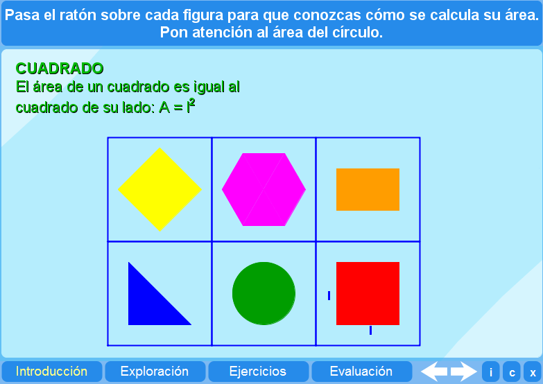
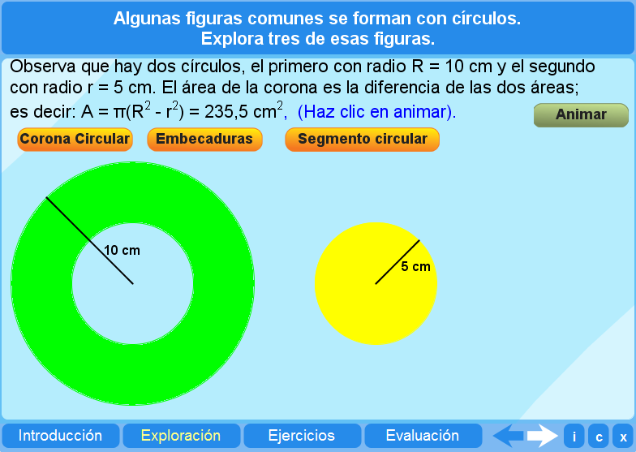
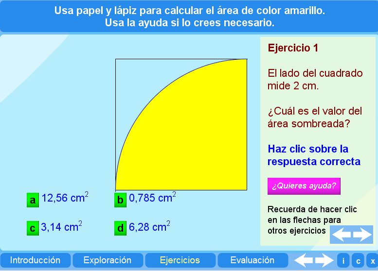
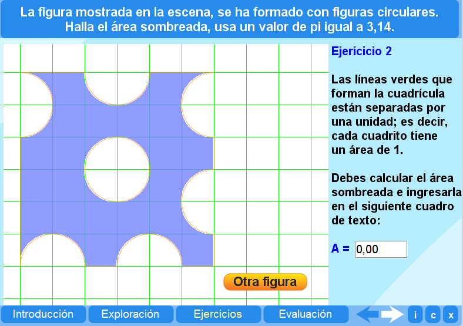
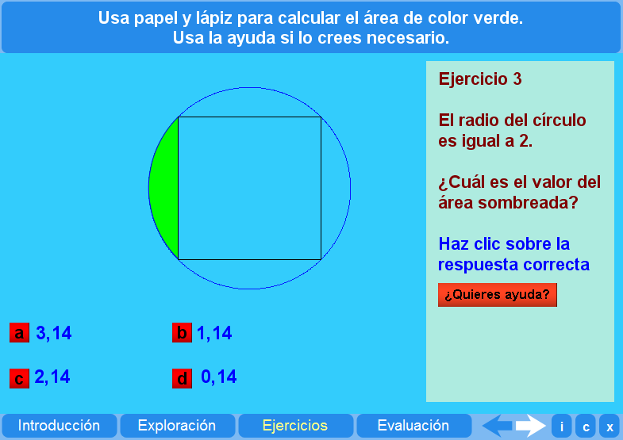
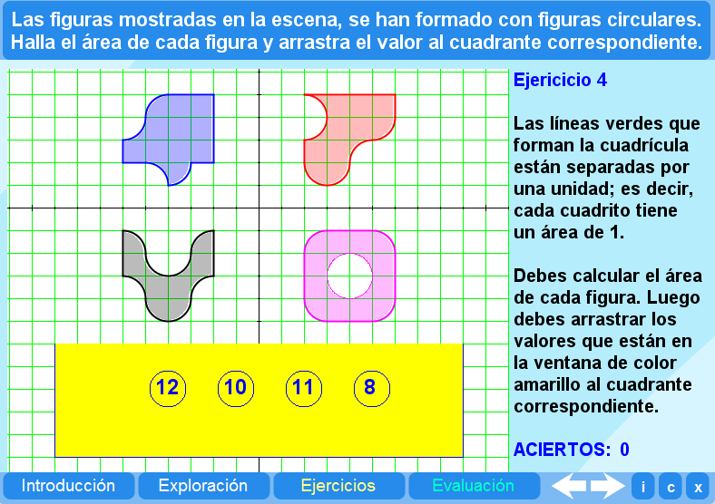
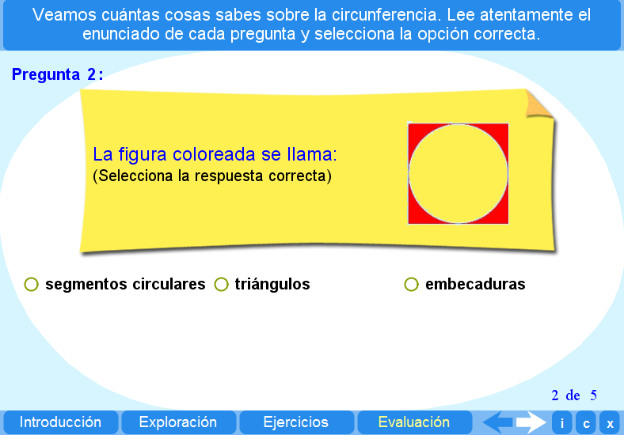

Objetivo
Calcular el área del círculo y de figuras compuestas con círculos o porciones del mismo.
Instrucciones generales
Se puede navegar entre los apartados con el menú de la parte inferior. Este menú aparece a lo largo de todo el objeto de aprendizaje y conserva su funcionalidad.
También se puede navegar por las escenas por medio de las flechas de navegación que aparecen en el lado inferior derecho de la aplicación. Dentro de los apartados Exploración y Ejercicios es necesario utilizar estas flechas para acceder a las escenas sucesivas de dichos apartados.

En la parte inferior derecha de la aplicación se encuentran los siguientes botones:
 |
Muestra la documentación del objeto de aprendizaje. |
 |
Despliega los créditos correspondientes. |
 |
Cierra el interactivo. |
Contenidos
Introducción
Escena que muestra varias figuras geométricas y permite identificar los parámetros para el cálculo del área.

Exploración
Actividad que permite reconocer figuras compuestas de círculos y el área que de la misma.

Ejercicio 1
Ejercicio de cálculo de áreas sombreadas.

Ejercicio 2
Ejercicio de cálculo de áreas sombreadas.

Ejercicio 3
Ejercicio de cálculo de áreas sombreadas.

Ejercicio 4
Ejercicio de cálculo de áreas sombreadas.

Evaluación
Esta evaluación consiste en identificar elementos que se relacionan con el círculo.

| Los materiales aquí presentados utilizan el applet Descartes Web 2.0. | |
 |
Los contenidos de esta unidad didáctica están bajo una licencia de Creative Commons. |